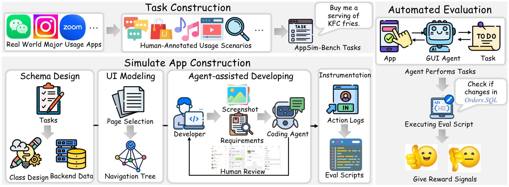
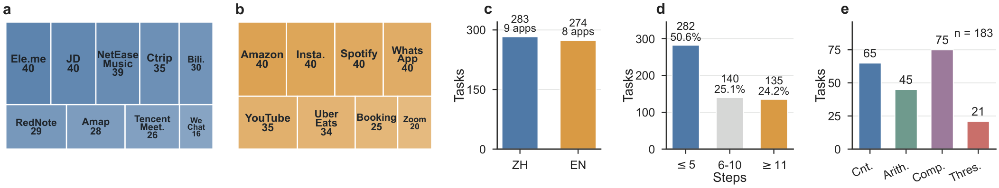
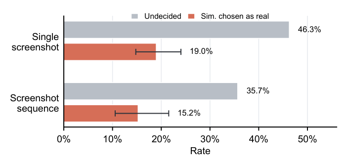
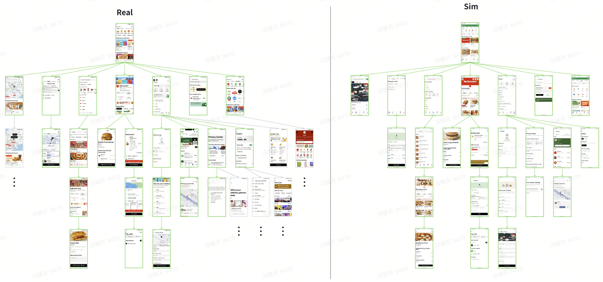
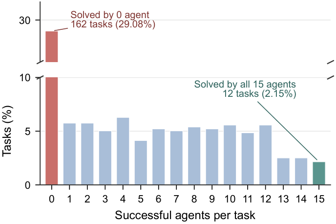
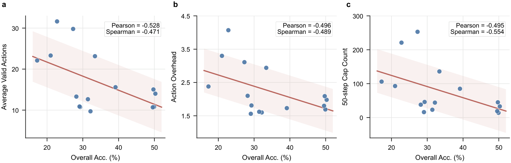

AppSim-Bench
Bridging Real-world Apps and Reproducible Evaluation for Mobile GUI Agents
Abstract
Mobile GUI agents can execute tasks from natural-language instructions, but their evaluation remains difficult to make both realistic and reproducible. Existing benchmarks typically trade off these goals: simplified apps lack real-world mobile complexity, whereas live commercial apps introduce uncontrolled variation from recommendations, advertisements, accounts, and changing content.
We propose AppSim-Bench, which addresses this trade-off through controllable simulated apps that preserve task-relevant interaction logic while supporting deterministic evaluation. Built through a coding-agent-assisted and human-verified workflow, it contains 557 tasks across 17 high-frequency Chinese and English apps. Its controllable backend data and outcome-based verification remove major sources of environmental stochasticity, enabling reproducible cross-model comparison.
Evaluating 15 GUI agents, we find that autonomous mobile execution remains far from solved. The best model completes only 50.27% of tasks, and 29.08% of tasks are not solved by any agent. Further analysis shows that failures concentrate in longer workflows, numerical reasoning tasks, and inefficient trajectories marked by high action overhead and budget exhaustion.
Apps in AppSim-Bench
AppSim-Bench covers 17 apps spanning video sharing, travel, food delivery, navigation, e-commerce, music streaming, social media, communication, ride hailing, and video conferencing. The table below lists each app, a brief description, and its task count (557 tasks in total).
| # | App (EN) | App (ZH) | Description | #Tasks |
|---|---|---|---|---|
| 1 | Bilibili | 哔哩哔哩 | A video-sharing app with ACG-oriented community content. | 30 |
| 2 | Booking.com | — | A travel booking app for hotels, flights, cars, taxis, and attractions. | 25 |
| 3 | Ctrip | 携程旅行 | A travel-service app for hotels, flights, trains, trips, and messages. | 35 |
| 4 | Ele.me | 饿了么 | A local-life and food-delivery app for restaurants, orders, coupons, and addresses. | 40 |
| 5 | Amap | 高德地图 | A map and navigation app with nearby places, routes, favorites, and travel tools. | 28 |
| 6 | NetEase Cloud Music | 网易云音乐 | A music-streaming app with songs, playlists, charts, lyrics, and user profiles. | 39 |
| 7 | JD | 京东 | An e-commerce app for product search, carts, orders, addresses, and store services. | 40 |
| 8 | RedNote | 小红书 | A lifestyle social-media app for notes, creators, comments, messages, and profiles. | 29 |
| 9 | Tencent Meeting | 腾讯会议 | A video-conferencing app for meetings, contacts, messages, and personal rooms. | 26 |
| 10 | Uber Eats | — | A food-delivery and local-services app with restaurants, carts, orders, and rides. | 34 |
| 11 | 微信 | A messaging and social app with chats, contacts, groups, and Moments. | 16 | |
| 12 | YouTube | — | A video platform for search, playback, comments, subscriptions, Shorts, and settings. | 35 |
| 13 | Amazon | 亚马逊 | An e-commerce app for product discovery, shopping lists, carts, orders, and support. | 40 |
| 14 | — | A messaging app with chats, calls, statuses, channels, communities, and contacts. | 40 | |
| 15 | Zoom | — | A video-meeting app for instant meetings, scheduled meetings, chat, contacts, and settings. | 20 |
| 16 | Spotify | — | A music and podcast app with playback, search, playlists, lyrics, and subscriptions. | 40 |
| 17 | — | A social-media app for posts, reels, messages, profiles, search, and publishing. | 40 | |
| Total | 557 | |||
How AppSim-Bench is Built
AppSim-Bench has three components: Tasks described in natural language, Simulated Apps with controllable backend data, and Automated Evaluation via deterministic outcome verification. Simulated apps are produced through a human-led, coding-agent-assisted workflow: developers specify task requirements, data schemas, page hierarchies, and reference screenshots; coding agents generate candidate implementations; and human developers inspect, run, and correct them until the task-relevant UI flows and backend states match the specification.

Benchmark at a Glance

(a–b) Task coverage across 9 Chinese and 8 English apps. (c) 283 Chinese vs. 274 English tasks. (d) Distribution by human-annotated reference steps (≤5, 6–10, ≥11). (e) 183 numerical-reasoning tasks split into counting, arithmetic, comparison, and threshold-filtering subtypes.
The 17 Simulated Apps
AppSim-Bench spans 17 high-frequency apps across video sharing, travel, food delivery, navigation, e-commerce, music streaming, social media, communication, ride hailing, and video conferencing. Each is a controllable simulation that reproduces the task-relevant screens and flows of its real-world counterpart. Screenshots below show one representative screen per app.
Main Results
Overall accuracy of 15 agents on AppSim-Bench, with task-weighted accuracy on the Chinese (ZH) and English (EN) app groups, and accuracy by task length (#S = human-annotated step count). Even the strongest model completes only about half of the tasks, and performance drops sharply on the longest workflows (≥11 steps).
| Agent Model | Overall | ZH Apps | EN Apps | #S ≤ 5 | #S 6–10 | #S ≥ 11 |
|---|---|---|---|---|---|---|
| Claude-Opus-4.7 | 50.27% | 60.07% | 40.15% | 58.87% | 54.29% | 28.15% |
| Gemini-3-Pro | 49.91% | 60.07% | 39.42% | 56.38% | 52.86% | 33.33% |
| GPT-5.5 | 49.73% | 58.66% | 40.51% | 59.22% | 52.14% | 27.41% |
| Gemini-3.1-Pro | 49.55% | 59.36% | 39.42% | 56.74% | 52.86% | 31.11% |
| Doubao-Seed-1.6 | 39.14% | 50.88% | 27.01% | 45.74% | 43.57% | 20.74% |
| GPT-5 | 33.39% | 37.81% | 28.83% | 43.62% | 31.43% | 14.07% |
| Doubao-Seed-1.8 | 32.14% | 34.63% | 29.56% | 43.26% | 27.86% | 13.33% |
| Qwen-3.6-Plus | 31.42% | 39.58% | 22.99% | 39.01% | 31.43% | 15.56% |
| Doubao-Seed-2.0 | 29.26% | 36.40% | 21.90% | 37.94% | 28.57% | 11.85% |
| GPT-5.4 | 29.08% | 34.63% | 23.36% | 38.30% | 25.71% | 13.33% |
| Qwen-3.6-Flash | 28.19% | 38.87% | 17.15% | 38.30% | 25.71% | 9.63% |
| Claude-Sonnet-4.6 | 27.29% | 31.10% | 23.36% | 36.17% | 27.86% | 8.15% |
| Claude-Haiku-4.5 | 22.80% | 22.61% | 22.99% | 34.04% | 15.71% | 6.67% |
| Claude-Sonnet-4.5 | 21.01% | 24.03% | 17.88% | 31.91% | 14.29% | 5.19% |
| Gemini-2.5-Pro | 17.24% | 21.20% | 13.14% | 26.24% | 14.29% | 1.48% |
Bold marks the best value in each column. ZH/EN are task-weighted accuracies over the Chinese and English app groups.
How Realistic Is AppSim-Bench?
A simulated benchmark is only useful if it stays close to the real thing. We assess realism along two axes: whether the screens look real to people, and whether the apps behave like their real counterparts in terms of page structure and navigation.

Visual realism. In a blind A/B study, seven annotators compared matched real and simulated assets. On static screenshots they were undecided 46.3% of the time and mistook the simulator for the real app in 19.0% of decided cases; on dynamic interaction sequences, 35.7% undecided and 15.2% mistaken. The simulated screens are visually hard to tell apart from real services.
Behavioral realism. Beyond appearance, each simulated app reproduces the page-transition topology of the real app for the screens that tasks actually touch. The figure below overlays the two: green pages are matched and preserved in both the real app and the simulator, while black pages are real-app states that lie outside the benchmark tasks and are intentionally pruned. This keeps the interaction logic an agent must follow faithful to the real app, while removing irrelevant states that would only add noise to evaluation.

Page-transition comparison between a real app and its simulator. Green boxes are task-relevant pages matched in both; black boxes are real-app pages not retained in the simulator.
Analysis

Shared blind spots. 29.08% of tasks are solved by no agent, and only 2.15% are solved by all, exposing systematic failure cases.

Accuracy vs. efficiency. Accuracy is negatively correlated with average valid actions, action overhead, and budget exhaustion: low accuracy comes with longer, less human-like trajectories.
BibTeX
@misc{appsimbench2025,
title = {AppSim-Bench: Bridging Real-world Apps and Reproducible Evaluation for Mobile GUI Agents},
author = {Anonymous},
year = {2025},
note = {Under review},
url = {https://andrewfeng2001.github.io/AppSim/}
}